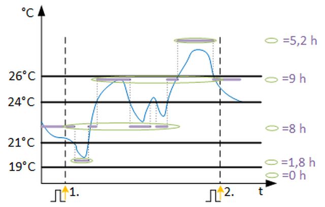

[LNGR_PRD] 一段时期的挥之不去
功能块 LNGR_PRD 记录信号在可自由定义的限制（5 个范围）内移动的延迟时间（以小时为单位）。
LNGR_PRD 记录信号在可自由定义的限制（5 个范围）内移动的持续时间（以小时为单位）。
Enable and disable the function
如果启用该功能（EnFnct 和 EnEvl = 1）并且模拟输入信号 [In] 可靠（Vldty = 1），则确定延迟时间（以小时为单位）。模拟值徘徊在可自由定义的极限值范围之间。
Calculation and evaluation
评估种类[EvlKind]决定计算方法。 [HiLm] 和 [LoLm] 确定极限值范围的 Delta 范围 [DRng1] 和 [DRng2] 的加法或减法。为了启用功能和可靠的输入信号，每种评估类型的时间（参见插图）会相加并以小时为单位显示在输出 [PrLgrrx] 和 [RctLgrrx] 上。时间会根据 [EvlKind] 的切换进行相应分配。

PrLgrrX | 将林格呈现在 X 范围内 |
RctLgrrX | 最近在 Range X 中徘徊 |

评估类型 1（从低到高） | 评估类型 2（低和高） | 评估种类3（个人） |
|---|---|---|
PrLgrr1 = 10,6h | PrLgrr1 = 3,6h | PrLgrr1 = 0h |
PrLgrr2 = 6,2h | PrLgrr2 = 3h | PrLgrr2 = 0h |
PrLgrr3 = 4h | PrLgrr3 = 4h | PrLgrr3 = 4h |
PrLgrr4 = -1h | PrLgrr4 = -1h | PrLgrr4 = 3h |
PrLgrr5 = -1h | PrLgrr5 = -1h | PrLgrr5 = 3,6h |
当前时间段的偏差显示在[PrLgrrx]上。该时间段到期后，当前时间将保存为最近时间段[RctLgrrx]的时间并设置为零。在 LNGR_PRD 外部生成的时间周期是通过输入 [Imp] 上的上升斜率确定的。如果输入信号无效（Vldty = 0），计算停止。输出的最新有效值将被冻结，直到信号再次有效。
Subperiods within time periods
输入 [EnEvl] 可用于评估整个时间段内的子周期。当 EnEvl = 0 时，评估被禁用，并且最近的有效值显示在输出处。在一次脉冲中，当前时间被保存为上一个时间段的值。
Reset
所有当前值和最近值均通过输入 [重置] 上的上升斜率设置为零。
输入 | 描述 | 数据类型 | 默认值 |
|---|---|---|---|
EnFnct | Enable function | 布尔值 | 1 |
0 - 该功能被禁用（所有 [PrLgrrx] 和 [RctLgrrx] = 0）。 | |||
EnEvl | Enable evaluation | 布尔值 | 1 |
0 - 评估被禁用并且输出端的有效值被冻结。 | |||
In | Input 输入信号 | 真实的 | 0.0 |
Imp | Impulse 确定评估时间周期的脉冲输入。上升沿表示新周期的开始。 | 布尔值 | 0 |
0 - 否 | |||
|
Vldty | Validity 滞留时间的计算只能用有效的输入信号来计算。 | 布尔值 | 1 |
0 - 输入信号无效。 | |||
EvlKind | Evaluation kind | 整数 | 3: On 1...3 |
1: Unknown | |||
HiLm | High limit | 真实的 | 23.0 |
LoLm | Low limit | 真实的 | 21.0 |
DRng1 | Delta range 1 | 真实的 | 2.0 |
DRng2 | Delta range 2 | 真实的 | 4.0 |
Reset | Reset 所有时间均重置为零。 | 布尔值 | 0 |
0 - 否 | |||
Pers | Persistent | 布尔值 | 0 |
0 - No | |||
TshVal | Threshold value | 真实的 | 0.1 |
|
BaObjRef | BA-Object reference | 结构 | --- |
BaObjRef | Device identifier | 双字 | 16#3FFFFF |
BaObjRef | Object identifier | 双字 | 16#3FFFFF |
BaObjRef | Item identifier | 整数 | -1 |
输出 | 描述 | 数据类型 | 默认值 |
|---|---|---|---|
PrLgrr1 | Present linger in range 1 | 真实的 | 0.0 |
RctLgrr1 | Recent linger in range 1 | 真实的 | 0.0 |
PrLgrr2 | Present linger in range 2 | 真实的 | 0.0 |
RctLgrr2 | Recent linger in range 2 | 真实的 | 0.0 |
PrLgrr3 | Present linger in range 3 | 真实的 | 0.0 |
RctLgrr3 | Recent linger in range 3 | 真实的 | 0.0 |
PrLgrr4 | Present linger in range 4 | 真实的 | 0.0 |
RctLgrr4 | Recent linger in range 4 | 真实的 | 0.0 |
PrLgrr5 | Present linger in range 5 | 真实的 | 0.0 |
RctLgrr5 | Recent linger in range 5 | 真实的 | 0.0 |
Dstb | Disturbed [Dstb] 指示是否访问了引用的 BACnet 对象。 | 布尔值 | 0 |
ErrCode | Error code indication | 整数 | 0: No error |
= 0 - No error | |||
LNGR_PRD 用于计算一个时间段内可自由定义范围内模拟输入值的滞留时间（小时）。通过识别设定点偏差并确定某个值在指定时间段内在可自由定义的极限值范围内停留多长时间，可以更早地识别错误，例如错误的控制参数、设定点违规或手动干预。
以下示例基于评估期 = 1 天：
